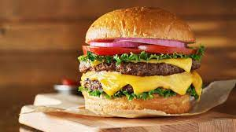

Cheeseburger Recipe

You can't go wrong with this classic beef burger grilled to perfection, topped with melted cheddar cheese and served in a soft sesame bun. Burgers like these are a staple to american culture
and you cannot go wrong grilling them up at your next BBQ!
Ingredients
- ¼ cup Goya Mayonnaise
- 1 chipotle pepper from a can of Goya Chipotle Peppers in Adobo Sauce, finely chopped
- ¼ cup sauce from a can of Goya Chipotle Chiles in Adobo Sauce
- 3 tablespoons Goya Minced Garlic, divided
- 1 tablespoon finely chopped fresh cilantro
- Goya Adobo All-Purpose Seasoning, to taste
- 2 pounds ground beef (80% lean)
- 1 teaspoon Goya Vegetable Oil
- 6 slices Cheddar cheese
- 6 hamburger buns
- 6 (1/4 inch thick) slices red onions
- 6 (1/2 inch thick) slices tomatoes
- 6 lettuce leaves
Steps
- In medium bowl, stir together mayonnaise, 1 tbsp. chipotle sauce, 1 tsp. garlic, cilantro and adobo; cover and refrigerate until ready to use.
- In large bowl, gently mix together beef, chopped chipotle, 3 tbsp. chipotle sauce, remaining garlic and adobo until combined. Divide meat into 6 portions; form into 1 inch-thick patties. (Take care not to over-handle meat or else it will toughen).
- Prepare grill to medium-high heat, grease with oil (or heat oil in medium skillet over medium-high heat). Cook burgers, flipping once, until charred and cooked to desired doneness (about 12 minutes total for medium rare). Add cheese to patties about 5 minutes before taking them off grill.
- To assemble, divide patties evenly among bottom buns; top with onion slice, tomato slice, lettuce and top bun spread with reserved chipotle mayonnaise.
Return to Main Page!